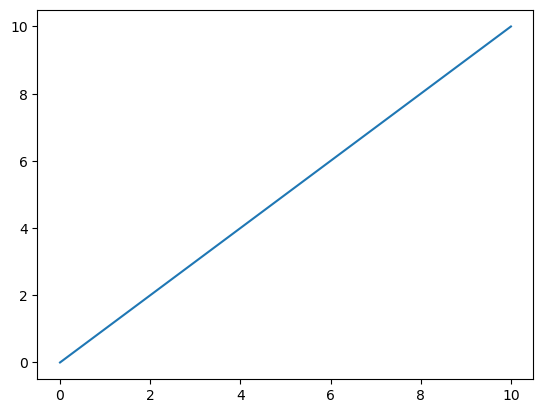

import pdbStart actual lesson
# pdb.set_trace()import torchinput = torch.randn(3, 5, requires_grad=True)
target = torch.randn(3, 5).softmax(dim=1)targettensor([[0.0939, 0.0956, 0.2387, 0.3214, 0.2504],
[0.5152, 0.0805, 0.1735, 0.0819, 0.1489],
[0.0680, 0.0394, 0.0111, 0.2271, 0.6543]])inputtensor([[-1.4974, 0.6848, 0.0614, -1.3641, -0.1052],
[ 0.8279, -0.2838, -0.3835, -1.0058, -0.7883],
[-1.0865, 0.1394, -0.4530, 1.0402, -1.2003]], requires_grad=True)import torch.nn as nnloss = nn.CrossEntropyLoss()loss??import torch.nn.functional as FF.cross_entropy??import pickle, gzip, math, os, time, shutil,torch,matplotlib as mpl, numpy as np
from pathlib import Path
from torch import tensor
from fastcore.test import test_close
torch.manual_seed(42);import matplotlib.pyplot as plt
# TODO: experiment with different values here once we have images
mpl.rcParams['image.cmap'] = 'gray'plt.plot(torch.range(0, 10), torch.range(0, 10));/var/folders/c8/mt_y_mg14_s14_slht8ds95w0000gn/T/ipykernel_22438/2324971393.py:1: UserWarning: torch.range is deprecated and will be removed in a future release because its behavior is inconsistent with Python's range builtin. Instead, use torch.arange, which produces values in [start, end).
plt.plot(torch.range(0, 10), torch.range(0, 10));
torch.set_printoptions(precision=2, linewidth=125, sci_mode=False)
np.set_printoptions(precision=2, linewidth=125)path_data = Path('data')
path_gz = path_data/'mnist.pkl.gz'
with gzip.open(path_gz, 'rb') as f:
((x_train, y_train), (x_valid, y_valid), _) = pickle.load(f, encoding='latin-1')
# import pdb; pdb.set_trace()
type(x_train), x_train.shape(numpy.ndarray, (50000, 784))x_train, y_train, x_valid, y_valid = map(tensor, (x_train, y_train, x_valid, y_valid))type(x_train), x_train.shape(torch.Tensor, torch.Size([50000, 784]))from IPython.display import display, HTML
display(HTML("<style>.container { width:100% !important; }</style>"))Foundations version
n,m = x_train.shape
c = y_train.max() + 1
n,m,c(50000, 784, tensor(10))nh = 50w1 = torch.randn(m, nh)
b1 = torch.zeros(nh)
w2 = torch.randn(nh, 1)
b2 = torch.zeros(1)def lin(x, w, b): return x@w+bx_valid.shapetorch.Size([10000, 784])t = lin(x_valid, w1, b1)
x_valid.shape, w1.shape, b1.shape, t.shape(torch.Size([10000, 784]),
torch.Size([784, 50]),
torch.Size([50]),
torch.Size([10000, 50]))def relu(x):
return x.clamp_min(0.)ttensor([[ -9.43, 1.46, 11.77, ..., -4.05, 11.49, 10.52],
[-17.37, 0.57, 17.38, ..., 6.78, 10.87, -5.41],
[ -2.73, 2.84, 2.44, ..., 6.01, -2.25, 13.03],
...,
[ -4.24, -11.04, 14.21, ..., 5.52, -4.46, -5.33],
[ -6.48, 5.49, 7.10, ..., -3.05, -1.82, 10.65],
[ -6.43, -14.77, 0.20, ..., 2.83, -4.23, 4.71]])t = relu(t)
ttensor([[ 0.00, 1.46, 11.77, ..., 0.00, 11.49, 10.52],
[ 0.00, 0.57, 17.38, ..., 6.78, 10.87, 0.00],
[ 0.00, 2.84, 2.44, ..., 6.01, 0.00, 13.03],
...,
[ 0.00, 0.00, 14.21, ..., 5.52, 0.00, 0.00],
[ 0.00, 5.49, 7.10, ..., 0.00, 0.00, 10.65],
[ 0.00, 0.00, 0.20, ..., 2.83, 0.00, 4.71]])def model(xb):
l1 = lin(xb, w1, b1)
l2 = relu(l1)
return lin(l2, w2, b2)res = model(x_valid)
res.shapetorch.Size([10000, 1])res.shape, y_valid.shape(torch.Size([10000, 1]), torch.Size([10000]))(res - y_valid).shape # best understanding of broadcasting rulestorch.Size([10000, 10000])res.squeeze().shapetorch.Size([10000])res[None, :].squeeze().shapetorch.Size([10000])Get rid of the trailing 1 to get MSE
res[:,0].shapetorch.Size([10000])y_train, y_valid = y_train.float(), y_valid.float()
preds = model(x_train)
preds.shapetorch.Size([50000, 1])def mse(output, targ):
return (output[:,0] - targ).pow(2).mean()
# return (targ - output[:,0]).pow(2).mean()res[:,0].shapetorch.Size([10000])res[:,0].mean()tensor(0.43)mse(preds, y_train)tensor(688.92)Gradients and backward pass
from sympy import symbols,diff
x,y = symbols('x y')
diff(x**2, x)\(\displaystyle 2 x\)
symbols??diff(3*x**2+9, x)\(\displaystyle 6 x\)
x_valid.shapetorch.Size([10000, 784])inp = x_valid[:4,:]
w = torch.randn(784, 10)
b = torch.zeros(10)out = inp@w + b
out.shapetorch.Size([4, 10])inp.shape, out.shape(torch.Size([4, 784]), torch.Size([4, 10]))inp.unsqueeze(-1).shape, out.unsqueeze(1).shape(torch.Size([4, 784, 1]), torch.Size([4, 1, 10]))x_valid.sum(0).shapetorch.Size([784])torch.sum??from fastcore.test import test_closea = (inp.unsqueeze(-1) * out.unsqueeze(1)).sum(0)b = inp.t() @ outa.shape, b.shape(torch.Size([784, 10]), torch.Size([784, 10]))test_close(a, b)def lin_grad(inp, out, w, b):
inp.g = out.g @ w.t()
w.g = inp.t() @ out.g
b.g = out.g.sum(0)def forward_and_backward(inp, targ):
# forward pass
l1 = lin(inp, w1, b1)
l2 = relu(l1)
out = lin(l2, w2, b2)
diff = out[:,0] - targ
loss = diff.pow(2).mean()
# backward pass
out.g = 2.*diff[:,None] / inp.shape[0] # try negative here
lin_grad(l2, out, w2, b2)
l1.g = (l1 > 0).float() * l2.g
lin_grad(inp, l1, w1, b1)forward_and_backward(x_train, y_train)# save grads
def get_grad(x): return x.g.clone()chks = w1,w2,b1,b2,x_traingrads = w1g,w2g,b1g,b2g,x_train_g = tuple(map(get_grad, chks))def mkgrad(x):
return x.clone().requires_grad_(True)ptgrads = w1pt,w2pt,b1pt,b2pt,x_train_pt = tuple(map(mkgrad, chks))def forward(inp, targ):
# forward pass
l1 = lin(inp, w1pt, b1pt)
l2 = relu(l1)
out = lin(l2, w2pt, b2pt)
return mse(out, targ)loss = forward(x_train_pt, y_train)loss.backward()ptgrads[0].gradtensor([[0., 0., 0., ..., 0., 0., 0.],
[0., 0., 0., ..., 0., 0., 0.],
[0., 0., 0., ..., 0., 0., 0.],
...,
[0., 0., 0., ..., 0., 0., 0.],
[0., 0., 0., ..., 0., 0., 0.],
[0., 0., 0., ..., 0., 0., 0.]])len(grads), len(ptgrads)(5, 5)for a, b in zip(grads, ptgrads):
# print(a)
# print(b.grad)
test_close(a, b.grad, eps=0.1)test_close??Refactor model
def f(a, b, *c):
print(a, b, *c, c)f(1, 2, 3, 4, 5)1 2 3 4 5 (3, 4, 5)class Relu():
def __call__(self, inp):
self.inp = inp
self.out = inp.clamp_min_(0)
return self.out
def backward(self):
self.inp.g = (self.inp > 0).float() * self.out.gclass Lin():
def __init__(self, w, b):
self.w, self.b = w,b
def __call__(self, inp):
self.inp = inp
self.out = inp @ self.w + self.b
return self.out
def backward(self):
self.inp.g = self.out.g @ self.w.t()
self.w.g = self.inp.t() @ self.out.g
self.b.g = self.out.g.sum(0)class Mse():
def __call__(self, inp, target):
self.inp,self.target = inp,target
self.out = mse(inp, target)
return self.out
def backward(self):
self.inp.g = 2. * (self.inp.squeeze() - self.target).unsqueeze(-1) / self.target.shape[0]class Model():
def __init__(self, w1, b1, w2, b2):
self.layers = [Lin(w1,b1), Relu(), Lin(w2,b2)]
self.loss = Mse()
def __call__(self, x, target):
for l in self.layers: x = l(x)
return self.loss(x, target)
def backward(self):
self.loss.backward()
for l in reversed(self.layers): l.backward()model = Model(w1, b1, w2, b2)loss = model(x_train, y_train)model.backward()test_close(w2g, w2.g, eps=0.01)
test_close(b2g, b2.g, eps=0.01)
test_close(w1g, w1.g, eps=0.01)
test_close(b1g, b1.g, eps=0.0000000001)test_close(x_train_g, x_train.g, eps=0.000000000001)print(x_train_g[:5])tensor([[-0.01, 0.00, 0.00, ..., 0.01, 0.01, 0.02],
[-0.01, 0.00, 0.00, ..., 0.01, 0.01, 0.01],
[-0.00, 0.00, 0.00, ..., 0.00, -0.00, 0.00],
[-0.00, 0.00, 0.00, ..., -0.00, 0.00, 0.00],
[-0.01, 0.01, 0.00, ..., -0.00, 0.00, 0.00]])print(x_train.g[:5])tensor([[-0.01, 0.00, 0.00, ..., 0.01, 0.01, 0.02],
[-0.01, 0.00, 0.00, ..., 0.01, 0.01, 0.01],
[-0.00, 0.00, 0.00, ..., 0.00, -0.00, 0.00],
[-0.00, 0.00, 0.00, ..., -0.00, 0.00, 0.00],
[-0.01, 0.01, 0.00, ..., -0.00, 0.00, 0.00]])Another refactoring
class Module():
def __call__(self, *args, **kwargs):
self.args = args
self.out = self.forward(*args)
return self.out
def forward(self): raise Exception('not implemented')
def backward(self): self.bwd(self.out, *self.args)
def bwd(self): raise Exception('not implemented')class Relu(Module):
def forward(self, inp):
return inp.clamp_min_(0)
def bwd(self, out, inp):
inp.g = (inp > 0).float() * out.ga = Relu()a(tensor(2))tensor(2)a(tensor(-2))tensor(0)class Lin(Module):
def __init__(self, w, b):
self.w, self.b = w,b
def forward(self, inp):
return lin(inp, self.w, self.b)
def bwd(self, out, inp):
inp.g = out.g @ self.w.t()
self.w.g = inp.t() @ out.g
self.b.g = out.g.sum(0)class Mse(Module):
def forward(self, inp, target):
return mse(inp, target)
def bwd(self, out, inp, target):
inp.g = 2. * (inp.squeeze() - target).unsqueeze(-1) / target.shape[0]model = Model(w1, b1, w2, b2)loss = model(x_train, y_train)model.backward()test_close(w2g, w2.g, eps=0.01)
test_close(b2g, b2.g, eps=0.01)
test_close(w1g, w1.g, eps=0.01)
test_close(b1g, b1.g, eps=0.0000000001)
test_close(x_train_g, x_train.g, eps=0.000000000001)Autograd
from torch import nn
import torch.nn.functional as Fclass Linear(nn.Module):
def __init__(self, n_in, n_out):
super().__init__()
self.w = torch.randn(n_in, n_out, requires_grad=True)
self.b = torch.randn(n_out, requires_grad=True)
def forward(self, x):
return x@self.w + self.bclass Model(nn.Module):
def __init__(self, n_in, nh, n_out):
super().__init__()
self.layers = [Linear(n_in, nh), nn.ReLU(), Linear(nh, n_out)]
def __call__(self, inp, target):
for l in self.layers: inp = l(inp) # [B, n_out] dim
return F.mse_loss(inp, target.unsqueeze(-1))model = Model(m, nh, 1)loss = model(x_train, y_train)
loss.backward()nn.Linear??l0 = model.layers[0]
l0.b.grad.shapetorch.Size([50])x_train.shapetorch.Size([50000, 784])